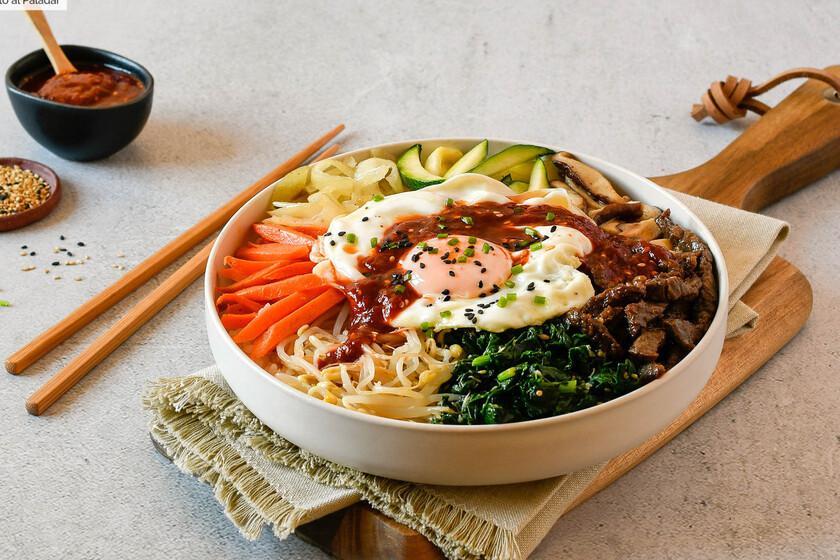

El barrio Insa-dong es el corazón cultural de Seúl, donde lo antiguo y lo moderno se entrelazan en
cada callejón. Entre casas de té tradicionales, galerías de arte y tiendas de antigüedades, se
esconde un espíritu bohemio que invita a perderse. Cada rincón guarda una historia, cada objeto una
huella del pasado… y cada aroma, una promesa de descubrir algo único.
Publicado por Melina Bovarines
Bibimbap

Se trata de un plato de arroz, verduras, carne y huevo con unos aliños y una salsa tremendamente
sabrosos. Es adictivo. El secreto está en los detalles y su increíble salsa ligeramente picante.
Publicado por Melina Bovarines
Vestimenta tradicional
La vestimenta tradicional coreana es un reflejo de su amor por la vida y el respeto por los valores.
Son prendas discretas que guardan el buen gusto y el recato, conocidas como hanbok. Según la
historia de Corea, esta vestimenta ha conservado su diseño básico desde hace unos 5000 años.